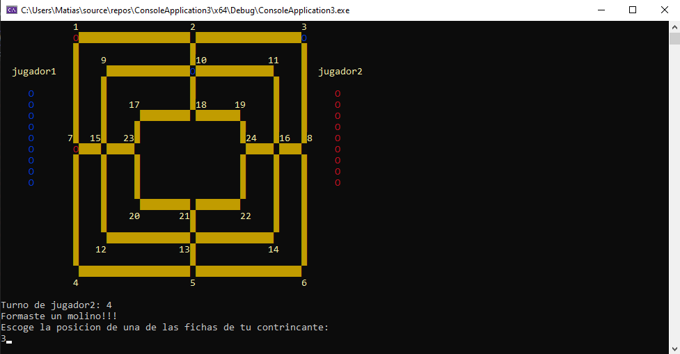

Características principales:
- Interfaz gráfica: Diseño claro y fácil de usar que facilita la interacción de los jugadores.
- Lógica de juego estratégica: Implementación de reglas tradicionales del juego, con manejo de turnos y validación de movimientos.
- Eliminación de piezas: Mecánica para retirar fichas del oponente tras formar un molino.
Imágenes
Imagen de la página principal

Imagen de las reglas del juego
Imagen de los créditos
Imagen del ingreso de los nombres y selección de los colores de las fichas
Aleatoriamente se selecciona quién comienza

Imagen del juego iniciado
Al seleccionar una posición se calcula la cantidad de fichas y el numero de jugadas de cada jugador
Al formar un molino se debe eliminar una ficha del otro jugador
Al colocar las 8 piezas en el tablero, después deberá moverlas a lugares adyacentes
Si un jugador tiene 3 fichas o menos, podrá mover sus fichas a cualquier lugar
Imagen al ganar la partida